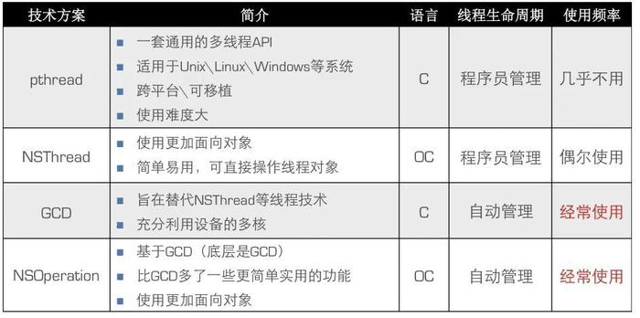

前言
在学习GCD之前，需要先弄明白几个概念：
并发（Concurrency）与并行（Parallelism）
- 并发和并行的区别就是一个处理器同时处理多个任务和多个处理器或者是多核的处理器同时处理多个不同的任务。
- 前者是
逻辑上的同时发生（simultaneous），而后者是物理上的同时发生。 - 举个例子：并发和并行的区别就是一个人同时吃三个馒头（交替啃这三个馒头）和三个人同时吃三个馒头。
队列与任务
任务：执行什么操作，在GCD中就是一个Block。
队列：用来存放任务，总共有两种队列，串行队列和并行队列，遵循FIFO规则。- 放到串行队列的任务，GCD 会
FIFO（先进先出）地取出来一个，执行一个，然后取下一个，这样一个一个的执行。 - 放到并行队列的任务，GCD 也会 FIFO的取出来，但不同的是，它取出来一个就会放到别的线程，然后再取出来一个又放到另一个的线程。这样由于取的动作很快，忽略不计，看起来，所有的任务都是一起执行的。不过需要注意，GCD 会根据系统资源控制并行的数量，所以如果任务很多，它并不会让所有任务同时执行。
- 放到串行队列的任务，GCD 会
同步与异步
同步和异步的主要区别在与会不会阻塞当前线程，直到Block中的任务执行完毕。
如果是同步操作，它会阻塞当前线程并等待Block中的任务执行完毕，然后当前线程才会继续往下运行。
如果是异步操作，当前线程会直接往下执行，它不会阻塞当前线程。
串行和并发
串行：一个任务执行完毕后，再执行下一个任务
并发：允许多个任务同时执行（逻辑上）
多线程方案对比：

GCD是什么？
GCD（Grand Central Dispatch）是 Apple 公司为了提高 OS X 和 iOS 系统在多核处理器上运行并行代码的能力而开发的一系列相关技术，它提供了对线程的高级抽象。GCD 是一整套技术，包含了语言级别的新功能，运行时库，系统级别的优化，这些一起为并发代码的执行提供了系统级别的广泛优化。所以，GCD 也是 Apple 推荐的多线程编程工具。
GCD 是系统层面的技术，除了可以被系统级应用使用，也可以被更普通的高级应用使用。使用 GCD 之后，应用就可以轻松地在多核系统上高效运行并发代码，而不用考虑繁琐的底层问题。GCD 在系统层面工作，能很好地满足所有应用的并行运行需求，将可用系统资源平衡地分配给它们。
GCD 提供了一套纯 C API。但是，它提供的 API 简单易用并且有功能强大的任务管理和多线程编程能力。GCD 需要和 blocks（Objective－C 的闭包）配合使用。block 是 GCD 执行单元。GCD 的任务需要被拆解到 block 中。block 被排入 GCD 的分发队列，GCD 会为你排期运行。GCD 创建，重用，销毁线程，基于系统资源以它认为合适的方式运行每个队列。所以，用户需要关心的细节并不多。
GCD如何使用
获取或创建队列
主队列
1dispatch_queue_t dispatch_get_main_queue(void);//和主线程相关联的串行派发队列(主队列)，在main执行之前由主线程自动创建。全局队列
123456789dispatch_queue_t dispatch_get_global_queue(long identifier, unsigned long flags);/// - identifier(priority)//The quality of service you want to give to tasks executed using this queue.(high->low)//QOS_CLASS_USER_INTERACTIVE,//QOS_CLASS_USER_INITIATED,//QOS_CLASS_UTILITY,//QOS_CLASS_BACKGROUND./// - flags//Flags that are reserved for future use. Always specify 0 for this parameter.自定义队列
12345dispatch_queue_t dispatch_queue_create(const char *label, dispatch_queue_attr_t attr);///-label//A string label to attach to the queue to uniquely identify it in debugging tools such as Instruments, sample, stackshots, and crash reports. Because applications, libraries, and frameworks can all create their own dispatch queues, a reverse-DNS naming style (com.example.myqueue) is recommended. This parameter is optional and can be NULL.///-attr//specify DISPATCH_QUEUE_SERIAL (or NULL) to create a serial queue or specify DISPATCH_QUEUE_CONCURRENT to create a concurrent queue.
创建任务
同步任务：会阻塞当前线程 (SYNC)
dispatch_sync: Submits a block object for execution on a dispatch queue and waits until that block completes.12345void dispatch_sync(dispatch_queue_t queue, dispatch_block_t block);///-queue// The queue on which to submit the block. This parameter cannot be NULL.///-block//The block to be invoked on the target dispatch queue. This parameter cannot be NULL.实际使用类似于下面这样：
1234dispatch_sync(<#queue#>,^{//code hereNSLog(@"%@", [NSThread currentThread]);})异步任务：不会阻塞当前线程 (ASYNC)
dispatch_async: Submits a block for asynchronous execution on a dispatch queue and returns immediately.12345void dispatch_async(dispatch_queue_t queue, dispatch_block_t block);///-queue//The queue on which to submit the block. The queue is retained by the system until the block has run to completion. This parameter cannot be NULL.///-block//The block to submit to the target dispatch queue. This function performs Block_copy and Block_release on behalf of callers. This parameter cannot be NULL.实际使用类似于下面这样：
1234dispatch_async(<#queue#>, ^{//code hereNSLog(@"%@", [NSThread currentThread]);});栗子分析
（1）在主线程中调用，以下代码结果是什么？
|
|
分析：首先执行任务1，打印出1，程序遇到dispatch_sync会立即阻塞当前主线程，把任务2放到主队列中， 等待任务2执行完，再执行任务3。可是主队列是按照FIFO原则执行任务，此时主队列中任务3排在任务2之前，所以要等到任务3执行完后才能执行任务2，这就会造成他们进入互相等待的局面，从而产生死锁。避免死锁的方法是在使用dispatch_sync执行任务时，传入参数的队列不要和当前线程的队列是一样的。
（2）以下代码的输出结果是什么？
|
|
分析：首先自定义创建了一个串行队列(DISPATCH_QUEUE_SERIAL)。执行任务1，打印出1。dispatch_async 是异步执行，所以当前线程不会被阻塞，会另外开启一个新线程，于是当前有两个线程在运行，管他们叫主线程和辅线程。主线程继续执行任务5，打印出5。辅线程执行Block中的任务。而Block中的任务和上一个例子问题1是一样的。可以按照上个例子方法分析，只会执行任务2，打印出2。由于主线程和辅线程是异步执行的，所以5和2没有先后顺序。
以上只是基本用法，还有一些其他用法：
延后执行（dispatch_after）
严谨点实际上是延后异步把block加入queue，至于执行取决于queue
|
|
实际使用如下：
|
|
- dispatch_once_t实现单例模式
|
|
- 循环执行任务
dispatch_apply类似一个for循环，并发的执行每一项。所有任务结束后，dispatch_apply才会返回，会阻塞当前线程。如果传入队列是串行队列，要注意防止死锁现象的发生。
|
|
实际如下使用：
|
|
- 队列组（dispatch_group）
队列组将很多队列添加到一个组里，当组里所有任务都执行完后，它会通过一个方法通知我们。基本流程是首先创建一个队列组，然后把任务添加到组中，最后等待队列组的执行结果。
dispatch_group_create=>dispatch_group_async=> dispatch_group_notify=>dispatch_group_wait
|
|
实际上使用如下：
|
|
- Dispatch Semaphore
dispatch_semaphore_t 类似信号量,可以用来控制访问某一资源访问数量。
使用过程：
- 先创建一个Dispatch Semaphore对象，用整数值表示资源的可用数量
- 在每个任务中，调用dispatch_semaphore_wait来等待
- 获得资源就可以进行操作
- 操作完后调用dispatch_semaphore_signal来释放资源
|
|
- dispatch_barrier（dispatch_barrier_async、dispatch_barrier_sync）
当这个函数加入到队列后，里面block并不是立即执行的，它会先等待之前正在执行的block全部完成后，才执行，并且在它之后加入到队列中的block也在它操作结束后才能恢复之前的并发执行。我们可以把这个函数理解为一条分割线，之前的操作，之后加入的操作。还有一个点要说明的是这个queue必须是用dispatch_queue_create创建出来的才行。
|
|